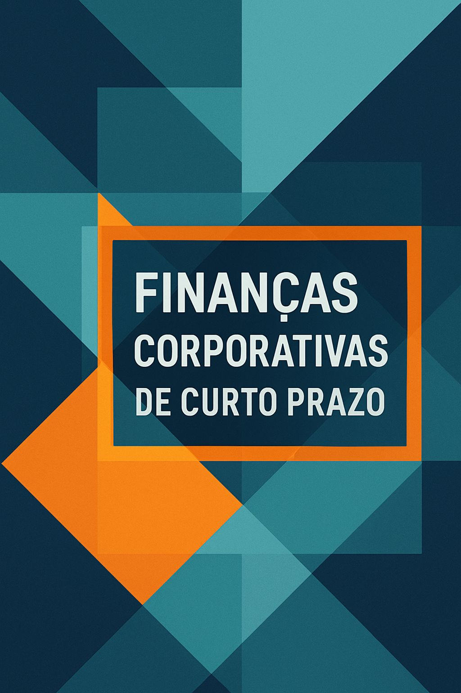

Finanças Corporativas de Curto Prazo
20 de outubro de 2025
🏢 O Curso

Página da disciplina “Finanças Corporativas I” do curso da Faculdade de Ciência Contábeis (FACIC) da Universidade Federal de Uberlândia (UFU). Aqui você encontrará informações sobre o programa do curso, materiais para seu acompanhamento e sugestões de leituras sobre Finanças Corporativas de Curto Prazo (artigos, slides, recursos interativos, resumos em áudio, vídeos etc.).
🧠 Professor
A disciplina é ministrada e mantida nesse hub por mim, Pablo Rogers 😉, doutor em Administração pela Universidade de São Paulo (FEA/USP) e professor de finanças e métodos quantitativos desde 2005 na UFU. Em meu site pessoal você encontrará mais detalhes sobre minhas formações, competências, trajetória e projetos.
🎯 Objetivos
O curso tem como objetivo apresentar os principais conceitos e práticas de finanças corporativas de curto prazo. A disciplina visa prover aos alunos uma visão teórica e prática da Administração do Capital de Giro como base fundamental para o planejamento e controle financeiro do curto prazo. Especificamente, ao final do curso pretende-se que o aluno:
Compreenda as teorias que embasam a gestão do capital de curto prazo;
Entenda a dinâmica da gestão do capital de giro;
Conheça as estratégias e modelos da gestão do caixa;
Compreenda a gestão de valores a receber, suas políticas e riscos envolvidos;
Assimile os aspectos gerais da gestão de estoques e seus modelos de análise.
📚 Programa
A ementa oficial da disciplina encontra-se aqui. O Plano de Ensino aprovado pela coordenação da FACIC/UFU pode ser acessado no Moodle, onde materemos a comunicação e organização das avaliações. Em linhas gerais o programa do curso versará sobre os seguintes conteúdos:
Introdução às Finanças Corporativas de Curto Prazo (FCCP)
Relação Risco e Retorno em Finanças
Gestão de Curto Prazo x Gestão de Longo Prazo
Teorias de Finanças
Administração Financeira do Curto Prazo (Capital de Giro)
Conceitos de Capital de Giro
Dinâmica Empresarial: Análise dos Ciclos Operacional e Financeiro
Investimento em Capital de Giro
Financiamento do Capital de Giro
Necessidade de Investimento em Giro (NIG)
-
Razões da demanda de moeda e manutenção de caixa
Ciclo de caixa e controle de seu saldo
Modelos de administração de caixa
Administração de Valores a Receber (Recebíveis)
Avaliação do risco de crédito
Elementos de uma política geral de crédito
-
Aspectos básicos dos estoques
Modelos de análise e controle dos estoques
Estudo de Caso (Projeto em Grupo)
Análise de Capital de Giro em Casos Reais
Elaboração de Relatório de Diagnóstico e Plano de Acões
⚙️ Metodologia
O material do curso organizado nesse repositório refere-se ao roteiro estruturado (enredo) de parte que discutiremos nas aulas presenciais e conteúdos adicionais (bibliografia, slides, recursos interativos, resumos, dicas de vídeos etc.). Na sala de aula teremos discussões conceituais e resoluções de exercícios, e por aqui, num primeiro momento, o foco é resumir o conteúdo e apresentar materiais adicionais. Em suma, o que é apresentado por aqui não substituí a leitura da bibliografia base: complementa.
A proposta do curso, materializada nesse site, busca seguir de perto a mensagem de Dogucu & Çetinkaya-Rundel (2022). Nesse artigo as autoras abordam a importância da reprodutibilidade na pesquisa e ensino. Elas recomendam que os professores-pesquisadores adotem fluxos de trabalho reprodutíveis em suas pesquisas e ensinem esses fluxos de trabalho aos seus alunos. Elas propõem uma dimensão para as práticas de reprodutibilidade, focada exclusivamente nas ferramentas para o ensino (todos os materiais de ensino devem ser computacionalmente reprodutíveis, bem documentados e abertos).
Este curso adota o uso de Inteligência Artificial Generativa (IA) como ferramenta de apoio pedagógico, alinhado às diretrizes éticas e responsáveis propostas por Sampaio et al. (2024). A IA é utilizada exclusivamente em funções complementares, que ampliam a acessibilidade e a interatividade dos conteúdos, sem substituir o trabalho intelectual, crítico e autoral do professor. Inclusive, o professor tem artigos científicos publicados sobre todos os temas lecionados na disciplina, mesmo antes do advento da revolução das IA (alguns temas, mais de uma dezena de artigos).
Considero que o uso da IA generativa na educação representa um caminho sem volta. Por isso, o ensino deve ser adaptado para essa nova realidade — tanto no processo de transmissão do conhecimento, quanto na avaliação do aprendizado. Ignorar essa transformação tecnológica seria negligenciar o potencial de inovação e inclusão que ela oferece.
Entre os recursos desenvolvidos com suporte de IA, destacam-se:
- 🧭 Elementos interativos do site que facilitam a navegação e a compreensão dos conceitos.
- 🎧 Resumos em áudio gerados com auxílio de IA para promover inclusão e autonomia no estudo.
- 📄 Apoio à redação de conteúdos, buscando sempre preservar a autoria, com revisão e curadoria humana1.
O uso da IA neste ambiente é transparente, contextualizado e limitado às funções recomendadas pelos autores (Sampaio et al., 2024), respeitando os princípios de autoria, originalidade e responsabilidade acadêmica. Nenhum conteúdo é gerado de forma integral ou automatizada sem supervisão docente.
Conforme Sampaio et al. (2024), a IA deve ser utilizada como apoio à expressão humana — e não como substituto da reflexão, da análise ou da autoria. É essa perspectiva que orienta todas as aplicações tecnológicas neste curso.
📖 Bibliografia
A literatura de finanças é vasta. No Brasil, temos vários bons manuais em língua portuguesa. Muitos livros-textos são traduções de autores americanos, ou seja, conteúdo ambientado em um mercado diferente do nosso. No entanto, existem alguns manuais de autores brasileiros, cujo conteúdo é adaptado para o contexto nacional. Vamos fazer uso dos dois! 😉
Geralmente, esses manuais percorrem diversos assuntos de finanças, entretanto, nosso foco será na FCCP. Os outros assuntos são tratados em disciplinas correlatas: Matemática Financeira, Finanças Corporativas II (Longo Prazo), Governança Corporativa, Avaliação Econômica de Empresas e Mercado de Capitais. Sem falar das áreas correlatas, tais como Economia (Micro e Macroeconomia), Matemática, Estatística e Ciência da Computação.
Como bibliografia base para os fundamentos do curso, utilizaremos as recomendações da ementa oficial, e adotaremos as referências atualizadas das bibliografias básica e complementar: Assaf Neto (2014), Assaf Neto (2021), Gitman (2010), Matias (2007), Ross et al. (2015) e Brealey et al. (2013).
🔍 Citação
Se você utilizar qualquer conteúdo deste curso em seus trabalhos acadêmicos, por favor, cite da seguinte forma:
BibTex:
@misc{rogers2025,
author = {Rogers, Pablo},
title = {Finanças Corporativas de Curto Prazo},
month = out,
year = 2025,
publisher = {Zenodo},
version = {1.0},
doi = {10.5281/zenodo.17305482},
url = {https://fccp.phdpablo.com}
}🔓 Licença
Finanças Corporativas de Curto Prazo by Pablo Rogers is licensed under CC BY-NC-SA 4.0


Por exemplo, i) transcrever um vídeo do professor e redigir textualmente com estrutura lógica; ii) resumir os pontos importantes de um artigo científico do professor e retornar um texto com linguagem não técnica e simples para o site; iii) gerar variações diferentes de exercícios consultados ou criados pelo professor, etc. Vide que nesses exemplos a autoria da fonte sempre é do professor, e a IA é uma ferramenta de apoio à redação.↩︎